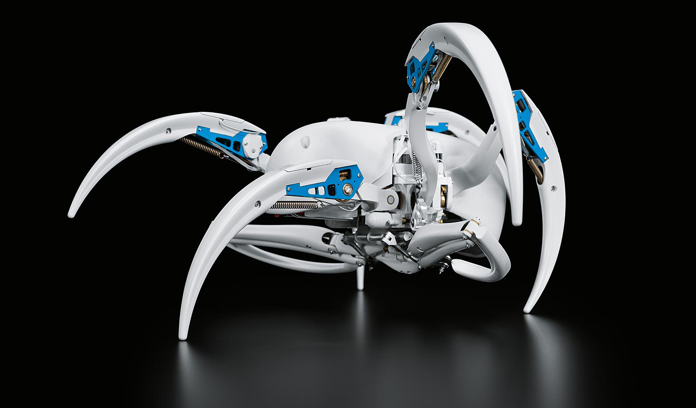
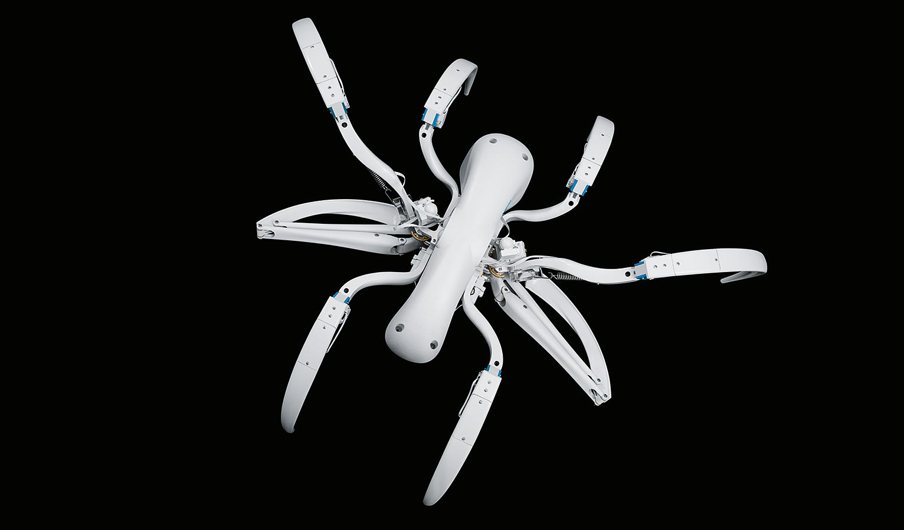
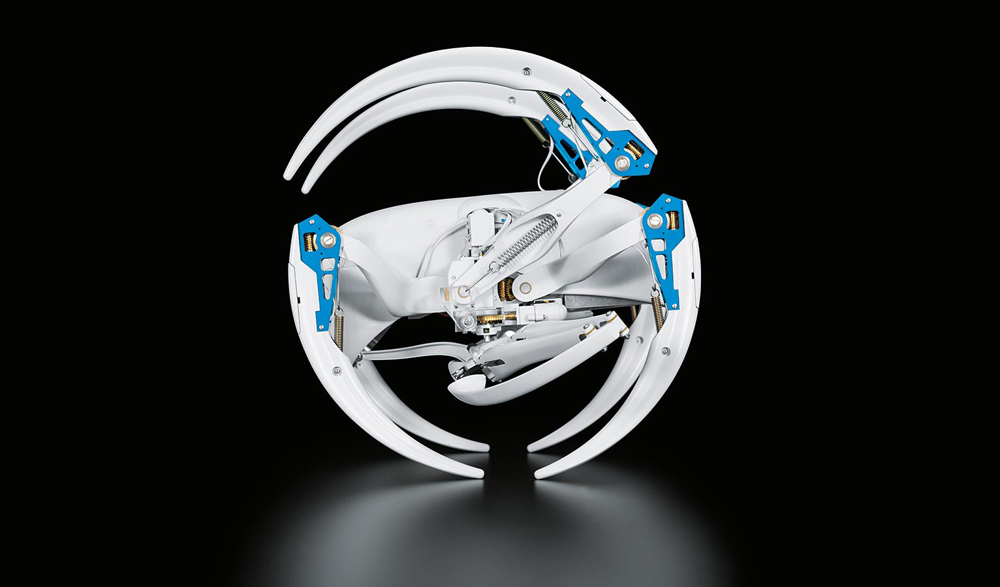

BionicWheelBot
Walk and roll like a flic-flac spider
New drive concepts and amazing forms of movement have always played an important role in our Bionic Learning Network. With the BionicWheelBot, a walking robot with very special properties has emerged, inspired by the flic-flac spider.

The biological model for the BionicWheelBot is the flic-flac spider (cebrennus rechenbergi). It lives in the Erg Chebbi desert on the edge of the Sahara. Professor Ingo Rechenberg, a bionics processor at the TU Berlin, discovered it there in 2008. The flic-flac spider can walk like other spiders. It can also propel itself into the air, however, with a combined sequence of somersaulting and rolling on the ground.
The flic-flac spider: perfectly adapted to its habitat
It is, therefore, ideally adapted to its surroundings: on even ground, it is twice as fast in so-called rolling mode than when walking. However, where it is uneven, it is faster walking normally. As such, in the desert, where both types of terrain can be found, it is able to move safely and efficiently.

Since its discovery, Professor Rechenberg has been working on transferring its movement patterns to the technical field. The studies into the spider’s behaviour led to the design of various robots that can propel themselves on difficult terrain. For the BionicWheelBot, the scientist from Berlin has now developed the kinematics and drive concept together with our bionics team.

The BionicWheelBot: transformation from walking to rolling mode
In order to start rolling, the BionicWheelBot bends three legs each on the left and right of its body to make a wheel. Two legs folded up whilst walking then extend, push the rolled-up spider off the ground, and continuously push it forward whilst rolling. This prevents the BionicWheelBot from grinding to a halt and ensures that it can move itself forward even on rough terrain. In rolling mode, the artificial spider – like its natural role model – is much faster than when walking. At the same time, the robot can even overcome inclines of up to five per cent uphill.